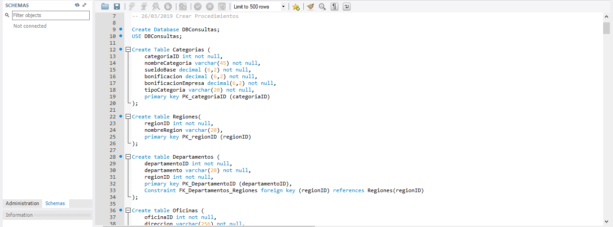
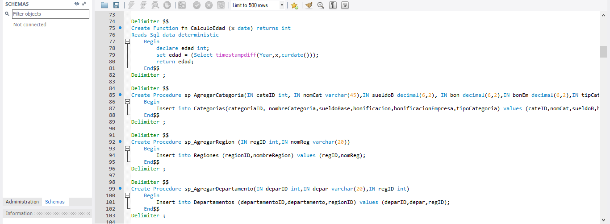
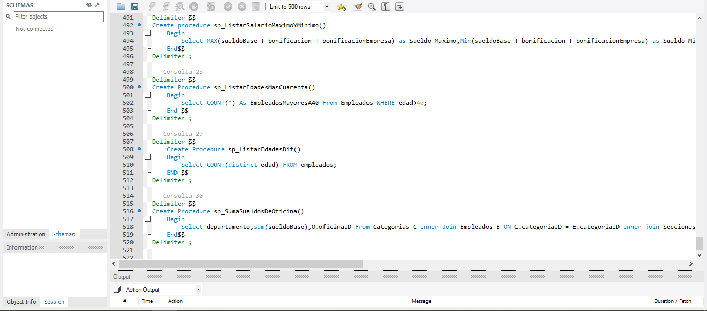

Base de datos sobre empleados en MySQL
Fecha de Realizacion: 26/03/2019
La base de datos en MySQL no depende de muchas tecnologias ya que fue realizada unicamente en el gestor de base de datos MySQL
Antes de realizar una base de datos en MySQL, se realiza un diagrama relaciones en donde se refleja como sera la estructura en Tablas y que datos conformara cada una, se señalan las relaciones que tendran y las "Primarry Key" de cada tabla al igual que las "Foreign Key", esta base de datos esta diseñada para la organizacion de una empresa que tiene oficinas/sucursales distribuidas en distintos sitios geograficos, esta compuesta por 6 Tablas que son: Categorias, Regiones, Departamentos, Oficinas, Telefonos, Secciones y Empleados; en cuanto a funciones lleva solo 1, 7 procedmientos para guardar datos y 30 consultas que van desde Listar Empleados por Region hasta ver el sueldo de cada uno de estos
Este proyecto incremento mi habilidad en el manejo de base de datos MySQL ya que la practica ayuda realizar un codigo limpio y eficaz, fortalecio mi habilidad con Triggers y funciones con cierta dificultad de logica
Para acceder al proyecto ingrese al siguiente link de github Click Aqui
- 
- 
- 